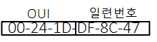
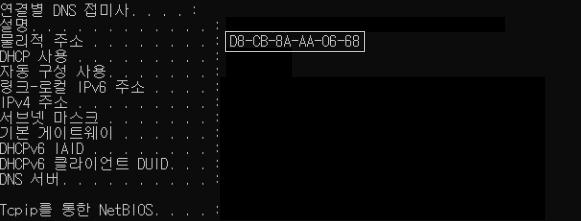

* 개인적인 공부 내용을 기록하는 용도로 작성한 글 이기에 잘못된 내용을 포함하고 있을 수 있습니다.
출처 : 해킹 입문자를 위한 TCP/IP 이론과 보안 2/e
#1 MAC주소란?
#2 MAC주소가 필요한 이유
#3 MAC주소 확인방법
#1 MAC주소란?
MAC주소란 네트워크 장비가 가지는 고유한 주소로 LAN영역에서 내부 통신을 수행하기 위해 필요한 주소이다.
MAC주소는 "물리적 주소" 라고도 불리는데 이는 MAC주소가 LAN카드(NIC)에 새겨진 주소이기 때문이다. 따라서 LAN 카드 한 장을 구입한다는 의미는 1개의 MAC주소를 구입한다는 의미와 동일하다. 또한 MAC주소는 하드웨어의 식별번호 같은 것이라 컴퓨터 뿐 만 아니라 공유기 라우터 스위치 등 모든 장비에 붙어있다.

10진수로 표기하는 IP주소와 달리 MAC주소는 총 48비트로 이루어진 16진수 체계이다.
IP주소를 Network ID , Host ID로 구분하는 것 처럼 MAC주소 또한 OUI(24bit)와 일련번호(24bit)로 구분한다. OUI는 MAC주소를 생성하는 기업의 식별자이며 일련번호는 기업에서 부여한 각 하드웨어를 구분하는 번호이다.
그러나 Network ID , Host ID가 가변적인 IP주소와 달리 MAC주소의 OUI와 일련변호는 고정적이다.
#2 MAC주소가 필요한 이유
그렇다면 IP주소가 있는데 굳이 왜 MAC주소가 필요한 것일까?
앞에서 정리했듯이 같은 LAN영역 안에 있는 하드웨어 끼리는 스위치 장비를 이용해 MAC주소간 통신이 가능할 것이다. 이렇게 스위치 장비가 MAC주소를 기반으로 호스트간 통신을 구현해 주는 기능을 "스위칭"이라고 부른다. 하지만 같은 LAN영역이 아닌 다른 네트워크 영역의 PC와 통신하고 싶다면 IP주소가 필요하다.
MAC주소를 학번, IP주소를 기숙사 주소와 같은 개념이라고 생각하면 이해하기 쉽다. 택배기사가 IP주소를 이용해 학생이 사는 기숙사 주소 까지는 알아 냈다고 하더라도, MAC주소(학번)를 모르면 누구에게 전달해 주어야 하는지 구분하지 못할 것이다. 따라서 상이한 LAN영역간 통신을 위해선 IP주소와 MAC주소가 모두 필요하다.
#3 MAC주소 확인방법
cmd창에 ipconfig/all 명령어를 입력하면 PC에 대한 여러 정보가 출력되는데, 물리적 주소라고 되어 잇는 부분이 바로 MAC 주소이다. 혹은 MAC주소만을 보고 싶다면 getmac /v 명령어를 입력하면 된다.
